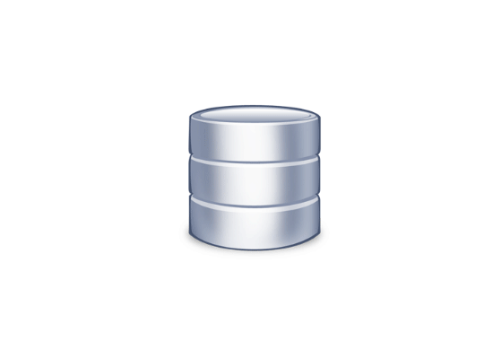

TrackBase est une base de données spécialisée exclusivement dans le domaine de la musique.
Cette plateforme en ligne offre aux utilisateurs un accès à une vaste collection de données sur des morceaux, des artistes, des albums et bien plus encore.
Que vous cherchiez des informations sur vos chansons préférées, les artistes émergents ou les tendances musicales, TrackBase vous permet d'explorer et de découvrir une multitude de ressources musicales.
Avec son interface conviviale et ses fonctionnalités de recherche avancées, TrackBase est l'outil parfait pour les passionnés de musique désireux d'approfondir leurs connaissances et leur appréciation de cet art universel.
Pourquoi TrackBase ?
Nous sommes un groupe d'élève en 1ère année d'informatique à l'ESTIAM.
En tant qu'étudiant, nous écoutons beaucoup de musique et le calvère de les retrouvés
dans d'énormes playlists ne nous facilitent pas la vie. Pour permettre de retrouver toutes les informations de vos musiques préférés,
TrackBase a été developpé pour vous.